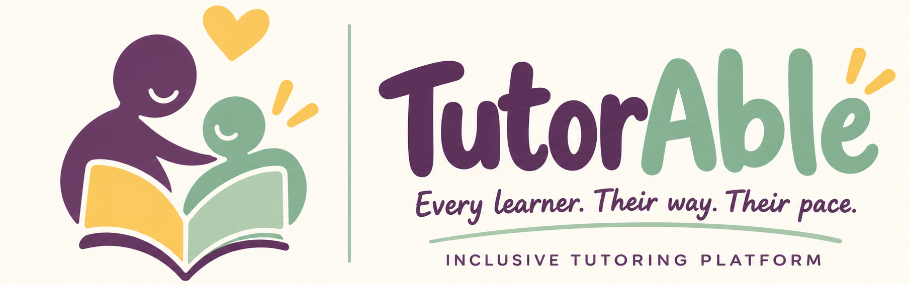

Personalized
Goals, pace, and teaching strategies shaped around each learner's unique cognitive profile.
Explore plans →Personalized tutoring, multisensory strategies, and neuro-affirming academic support designed around how each unique mind learns best.

Select your learner's primary focus area below to explore our tailored tutoring approach:
Body-doubling techniques, 15-minute visual task chunking, low sensory distraction, and instant positive feedback loops.
Instead of asking learners to fit a rigid curriculum, TutorAble adapts the experience, tools, and communication to the learner.
Goals, pace, and teaching strategies shaped around each learner's unique cognitive profile.
Explore plans →Connect with vetted educators experienced in ADHD, Dyslexia, Autism, and Executive Functioning.
Meet tutors →Learners, tutors, and caregivers stay aligned with stress-free session summaries.
See family view →Multisensory tools, visual timers, customizable fonts, and calm low-stress environments.
Try features →Calm colors, customizable fonts, and zero high-stress pressure drills.
Learners learn how to request breaks, ask questions, and express their learning preferences.
Visual diagrams, tactile manipulatives, storytelling, and interactive whiteboards.
Search by subject, learning style, and specific support needs — not just a generic list of credentials.
 ● Available This Week
$45/hr
● Available This Week
$45/hr
Mathematics · Dyscalculia Support
Uses visual representations and tactile math blocks to replace formula anxiety with intuitive understanding.
 ● Available Tomorrow
$42/hr
● Available Tomorrow
$42/hr
Reading · Dyslexia & Phonics
Certified Orton-Gillingham practitioner crafting interactive phonics games that empower confident readers.
 ● Available Today
$50/hr
● Available Today
$50/hr
Science & STEM · Conceptual Learning
Transforms complex biology and chemistry topics into vivid storytelling and interactive visual models.
 ● Available This Week
$48/hr
● Available This Week
$48/hr
Executive Functioning · ADHD Specialist
Helps students master time management, task chunking, organization, and body-doubling strategies.
 ● Available Tomorrow
$52/hr
● Available Tomorrow
$52/hr
Autism Spectrum · Social Communication
Strengths-based tutor using passion-led learning and explicit, low-anxiety clear instructions.
 ● Available Today
$40/hr
● Available Today
$40/hr
Early Literacy & Math Confidence
Specializes in young learners needing gentle pacing, playful engagement, and anxiety-free learning routines.
Matching visual, auditory, or kinesthetic learning preferences with specialized teaching certifications.
Aligning lighting, noise tolerance, and session break schedules for zero sensory distress.
Pairing personalities so tutoring feels like working with a trusted, supportive academic mentor.
If your child's first session with a tutor doesn't feel like a 100% right fit, we will re-match you immediately and cover the cost of your next trial session.
Turn overwhelming subjects into small, celebratory milestones. We offer three tailored plan tracks adapted continuously as confidence grows.
Gentle pacing, reduced anxiety, and foundational skill mastery.
Multisensory tools, executive coaching, low sensory load.
Targeted problem solving, self-advocacy, and test prep.
Helps learners track session time with gentle color transitions rather than high-stress countdowns.
Breaks large assignments into 10-minute micro-goals that prevent overwhelm.
Interactive whiteboard featuring drawing, audio clips, and visual block models.
“Alex solved 3 multi-step word problems independently using visual diagrams!”
Focused on visual fraction strips. Alex was engaged for 45 minutes straight using the screen drawing tool.
Practiced visual task breakdown for history assignment. Created color-coded checklist.
Stay informed without feeling overwhelmed. See goal tracking, tutor feedback after every session, and meaningful growth in one serene space.
TutorAble tutors work alongside parent insights and school IEP goals. We export structured progress summaries that you can bring directly to parent-teacher conferences.
Accessibility isn't an afterthought. It's woven into how TutorAble is built — from high-contrast palettes to customizable dyslexia-friendly typography and calm motion.
“For the first time, my 11-year-old son with ADHD looks forward to math tutoring. Priya understands his brain and never rushes him.”
“Reading used to make me cry. Mr. Daniel made it feel like a game and taught me how letters connect in a way that actually clicked!”
“The parent dashboard gives me complete peace of mind. I can see IEP goals being met week after week without any guesswork.”
Everything you need to know about matching, pricing, and how our neuro-affirming tutoring works.
We consider subject needs, learning style (visual, auditory, kinesthetic), neurodivergent traits (ADHD, Dyslexia, Autism), personality fit, and availability to ensure an empowering match.
Yes! Tutors can review your child's IEP or 504 goals and incorporate specific accommodations directly into session plans and progress reporting.
All educators undergo rigorous background checks, hold degrees or specialized certifications in education or learning sciences, and complete TutorAble's Neuro-Affirming Training module.
We offer a 100% Fit Guarantee. If your first session doesn't feel right, we'll match you with a new tutor and cover your next session for free.
Sessions typically range from 30 to 60 minutes depending on age and sensory bandwidth, including breaks, visual timers, and interactive reflection.
Find personalized support built around the learner — not the other way around.
Find Your Tutor →